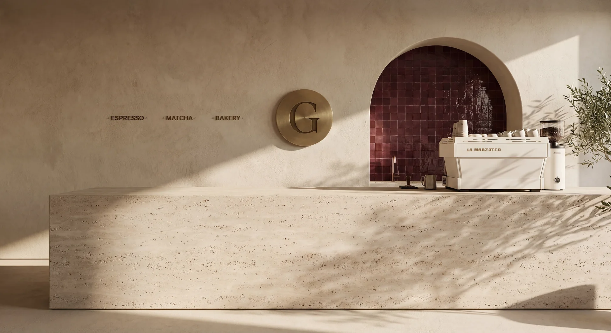
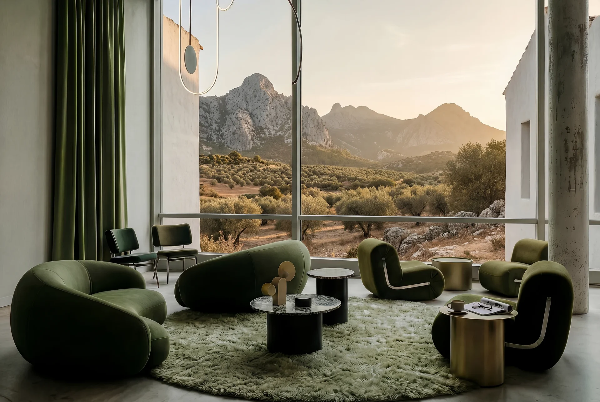
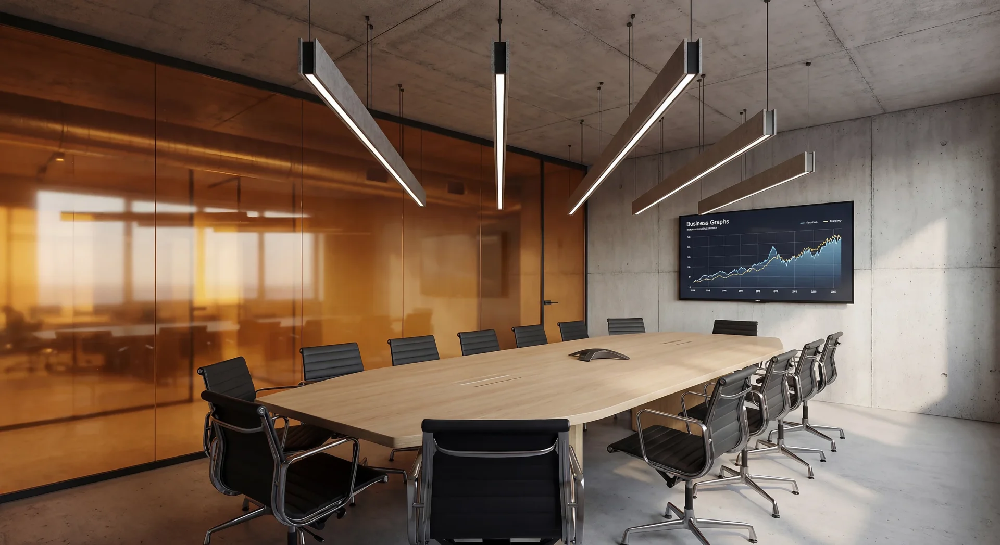

The business model comes before the spatial response
The brief begins with how the business needs to operate: who the space is for, how people and goods move, what the team needs to deliver service, which approvals govern opening and which parts of the brand position must become physical.
Hospitality
Hotels and guest environments where arrival, rooms, shared spaces, service routes and back-of-house operations must work as one experience.
Food and beverage
Restaurants, cafés and bars shaped around capacity, guest journey, kitchen and bar logic, service efficiency, acoustics and opening requirements.
Retail and showrooms
Customer journeys, product display, dwell areas, visibility, storage, staff needs and the spatial translation of brand position.
Workplaces
Work environments balancing concentration, collaboration, identity, technical systems, wellbeing and the practical needs of teams.
Commercial design components
- Commercial and operational briefBusiness model, target customer, operating goals, staffing, service sequence, capacity, maintenance and brand position establish the criteria the space must support.
- Customer, guest and staff flowArrival, circulation, dwell zones, queues, friction points, service routes, reception, kitchens, storage and the relationship between front-of-house and back-of-house.
- Architecture and interior conceptLayout, spatial sequence, facade, material language, furniture, bespoke joinery and signage locations translate the commercial brief and brand position into a coherent environment.
- Technical engineering and licensingHVAC, electrical systems, plumbing, drainage, extraction, accessibility, evacuation, fire strategy and telecommunications are coordinated with the design and required approvals.
- Lighting, material and durabilityProduct, task, ambient, facade and signage lighting are developed with colour temperature, controls, finishes, cleaning, maintenance and replacement criteria.
- Concept rolloutFor growing brands, the flagship concept is translated into specifications, critical dimensions, tolerances and local-adaptation guidance for future locations.
From strategic brief to opening
Strategy and feasibility
The commercial brief, property constraints, approvals, target budget and opening programme are tested before the concept expands.
Concept and validation
Layout, flows, capacity, atmosphere, materials and technical implications are compared against the agreed operational goals.
Technical design and approvals
Architecture, interiors, engineering, lighting and licensing information are coordinated into one buildable package.
Procurement and construction
Tender information, contractor offers, site questions, materials, quality, changes, programme and budget status are reviewed against the approved project.
Opening and close-out
Final inspections, snagging, operational documentation and the agreed opening sequence are coordinated, with post-opening review where included in the scope.
Expansion-ready concepts
For chains and growing brands, Wolfblanc can document the elements that must remain consistent and those that may adapt to each property, market or local approval process. The result is a practical spatial system, not a copy-and-paste interior.
Project control through delivery
Opening dates are often commercial deadlines. Project management connects procurement, consultants, contractors, programme, budget status and change control. Project Monitoring provides structured visibility for owners, investors or operators who cannot remain on site.
Selected commercial work

Bistró Dterra
Hospitality interior · Madrid

Granolita
Café interior · Palma

Selva Hotel
Hospitality architecture · Grazalema

Norrsken Office
Workplace interior · Stockholm
Why Wolfblanc for commercial design
- Strategy before aesthetics
Customer experience, operations, brand position and commercial objectives establish the brief before materials or visual language are selected. - Integrated technical delivery
Architecture, interiors, engineering, licences, tender information and construction decisions remain connected under one senior architectural lead. - Professional credentials
Our team combines COAM registration in Spain, the SAR/MSA professional title in Sweden and TEE-TCG registration in Greece. - Wellbeing as a design discipline
WELL-informed criteria bring lighting, acoustics, air quality and material health into decisions affecting both customers and staff.